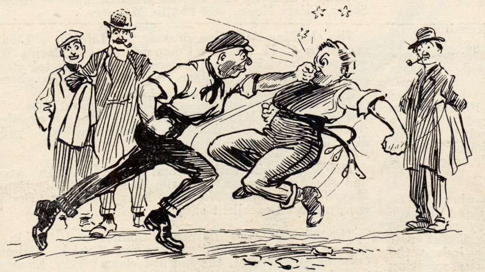

Street Fight
People have become so volatile, they have so little tolerance that even a trifle is enough to ignite their temper. Street fights are becoming more and more frequent. Once I witnessed such a fight from close quarters. When I was returning from my school, I saw two boys quarreling for a ball. But before I reached there, two ladies came out from the adjoining houses to find out why their children were crying. Instead of separating the kids, surprisingly they started quarreling amongst themselves. A slanging match started. Voice were raised. Soon many ladies came out of their houses and surrounded them. None tried to stop them. Some even added fuel to fire by their comments. It seemed as if they had used up all their abusive vocabulary and were about to come to blows. One had already started tearing the hair of the other. Then my grandmother came out. She is somewhat hard of hearing. Even she heard their voices. She in her forthright manner scolded both and silenced them. Then she enquired about the reason. To everyone’s surprise they both told that the son of the other one had taken her son’s ball, and was quarreling with him. I could not help laughing when i saw that both the boys were playing happily with that very ball a few minutes later.